◾️レベル950~受託可能
◾️経験値約1710億
◾️目安30分〜40分
目次
1.忘れられた場所に存在するのは ＜ 2.記憶されなかった魂 ＜ 3.魂を慰めるお香 ＜ 4.盗まれた物資 ＜ 5.休まない看守
1. 衛星都市ロングテール
| 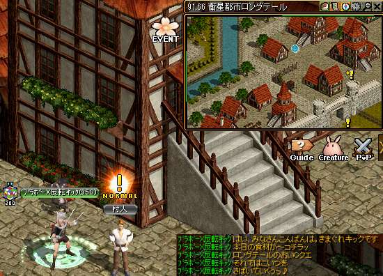 |
ガイド951~のクエスト/忘れられた場所に存在するのはへ飛ぶ。 村人【91.66】と話してクエ受諾 村人【91.66】と話してクエ受諾 |
|---|---|
| 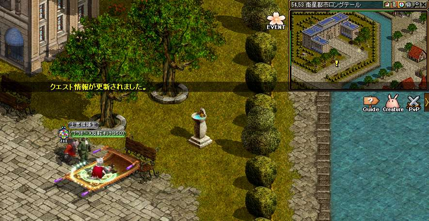 |
ガイド751~のクエスト/士官候補生の悩み へを選択し飛ぶ。 すぐ右上にいる 士官候補生【53.54】と話してＵＰ。 |
| 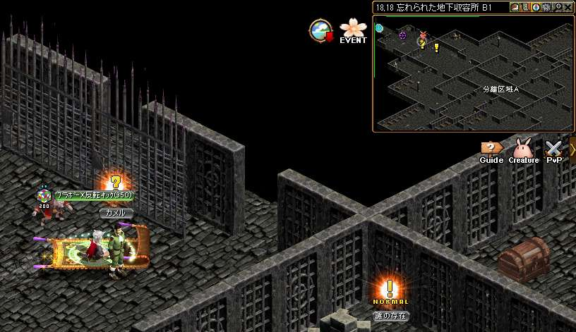 |
ガイド951~のクエスト/忘れられた地下収容所B1へ飛ぶ ガイドで地下収容所B1に飛ぶ 目の前の カメル【18.18】と話してＵＰ。 カメルの前を記憶１ 収容所の調査をする。 カメルの前を記憶１ 収容所の調査をする。 【40.60】収容所の調査１ 【54.77】収容所の調査２ 【68.48】収容所の調査３ 記憶１でカメルに戻る 【40.60】収容所の調査１ 【54.77】収容所の調査２ 【68.48】収容所の調査３ 記憶１でカメルに戻る経験値が貰えるのでパワキを準備しよう！ 【カメル】と２回話すとクエ終了経験値が貰える！ |
2. 記憶されなかった魂
| 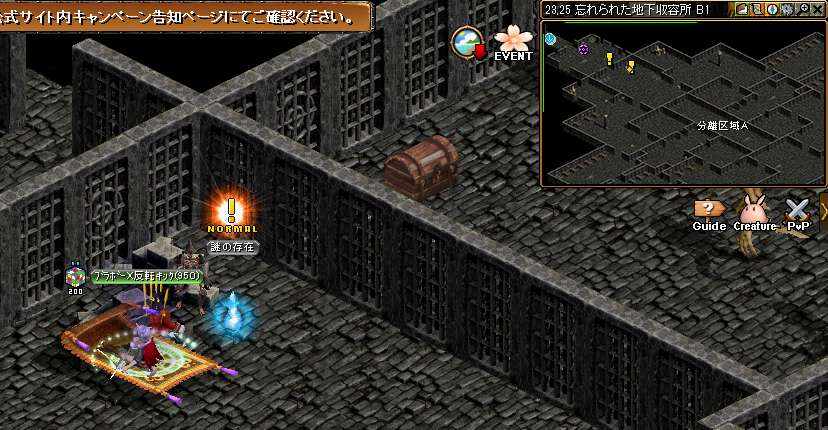 |
下にいる【謎の存在】に話しかけるとクエ再開 経験値が貰える！ |
|---|---|
| 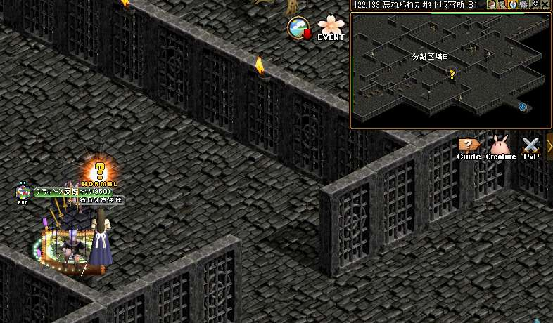 |
ガイド1001~の狩場/忘れられた地下収容所B2へ飛ぶ。 ガイドで地下収容所B2に飛ぶ 地下収容所B2からB1に戻る。 真っ直ぐ進んだ所にいる 名もなき存在【122.133】と話してＵＰ。 名もなき存在の前を記憶２ |
| 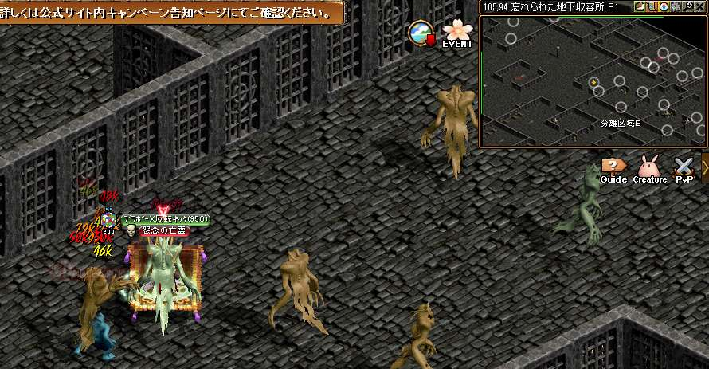 |
怨念の亡霊を倒す 亡者の白い花を ２０個手に入れてＵＰ。 記憶２で、なもなき存在の前へ |
|
【名もなき存在】と話してＵＰ。 |
|
| 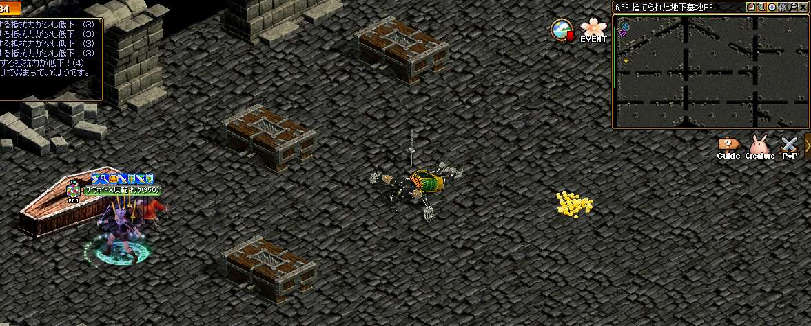 |
ガイド1001~の狩場/地下墓地B3へ飛ぶ。 記憶２で、なもなき存在の前へ |
|
【名もなき存在】と話してＵＰ。 経験値が貰える！ |
3. 魂を慰めるお香
|
記憶１で、収容所B1のカメルの前へ 【カメル】と話してクエ受諾 【カメル】がまだおかしいらしい |
|
 |
ガイド751~のクエスト【士官候補生の悩み】へ飛ぶ。 ロングテールの 【カメル 46.64】に話しかける 【2番】を選択。会話をそのまま進めてＵＰ ロングテールのカメル前を記憶１取り直し。 |
| 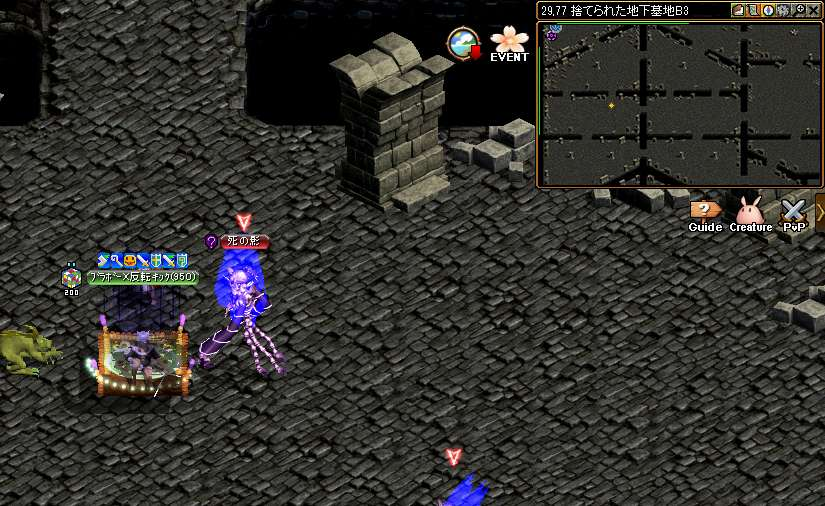 |
ガイド1001~のクエスト/忘れられた地下収容所B3 へ飛ぶ。 ガイドで【忘れられた地下収容所B3】に飛ぶ。 死の影を倒して、古い香炉を３個ドロップさせてＵＰ。 記憶１でロングテールのカメル前へ |
 |
２番の選択肢をクリック 会話をそのまま進めてＵＰ。 |
| 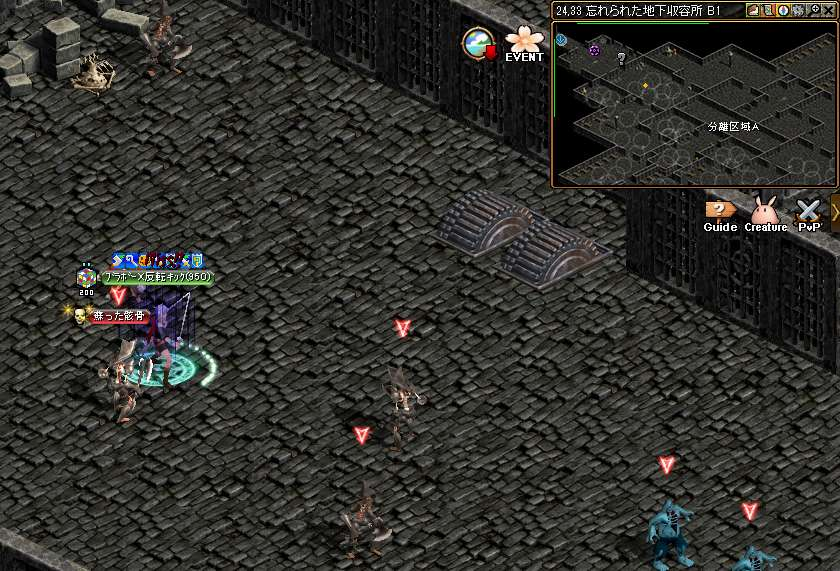 |
ガイド951~のクエスト/忘れられた地下収容所B1へ飛ぶ。 ガイドで【地下収容所B1】へ飛ぶ MOBを５０体倒してＵＰ 記憶１でロングテールのカメル前へ |
| 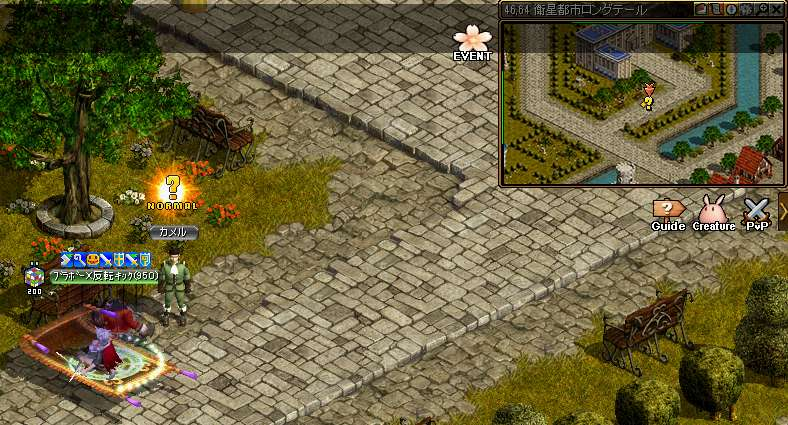 |
２番の選択肢をクリック 会話をそのまま進めてＵＰ。 祭壇を触りに行く |
| 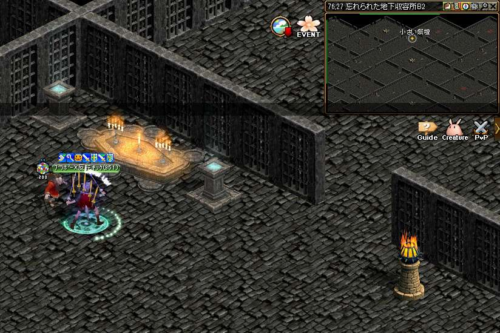 |
ガイド951~のクエスト【地下収容所B2】 小さい祭壇を触る 【76.27】クリックをしてクエ終了 経験値が貰える！ |
4. 盗まれた物資
| 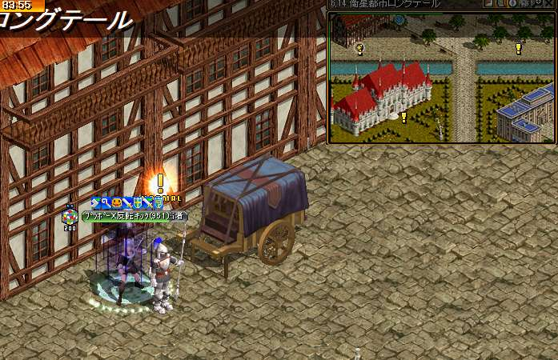 |
ガイド951~のクエスト/盗まれた物資 ガイドで 【ロングテール】に飛ぶ 【納品担当者】と話してクエ受諾 納品担当者の前を記憶１取り直し。 |
|---|---|
| 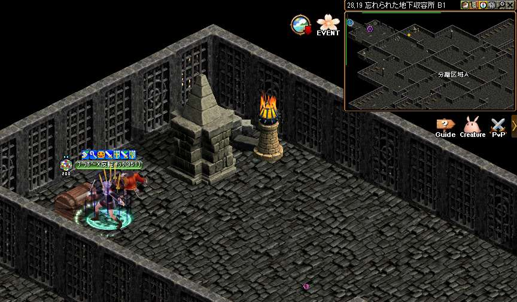 |
ガイド951~の狩場【地下収容所B1】へ飛ぶ 宝箱のオブジェクトを３か所クリック 【28.19】納品物資の探索1 |
| 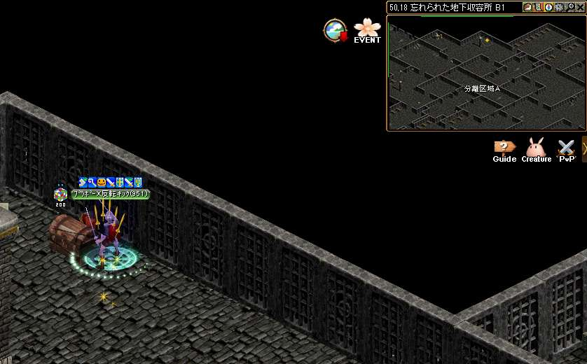 |
【50.18】納品物資の探索2 |
| 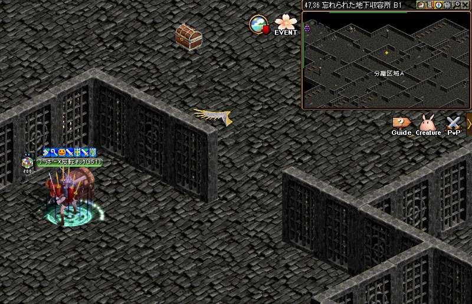 |
【47.36】納品物資の探索3 記憶１で納品担当者の前へ |
|
２回【納品担当者】と話してＵＰ |
|
| 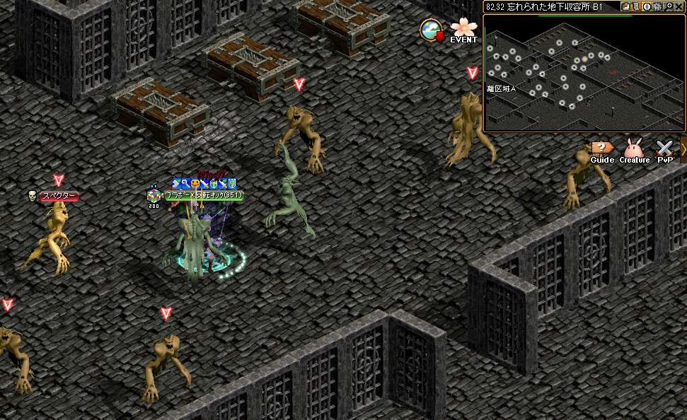 |
ガイド951~のクエスト【地下収容所B1】へ飛ぶ。 【スペクター】を倒す 納品箱の鍵を ドロップさせてＵＰ ドロップめちゃわるい |
| 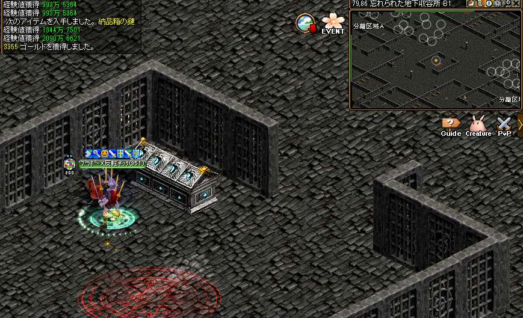 |
宝箱を触りにいく 宝箱をクリックしてＵＰ 記憶１で納品担当者の前へ |
 |
【納品担当者】と話してＵＰ。 経験値が貰える！ |
5. 休まない看守
| 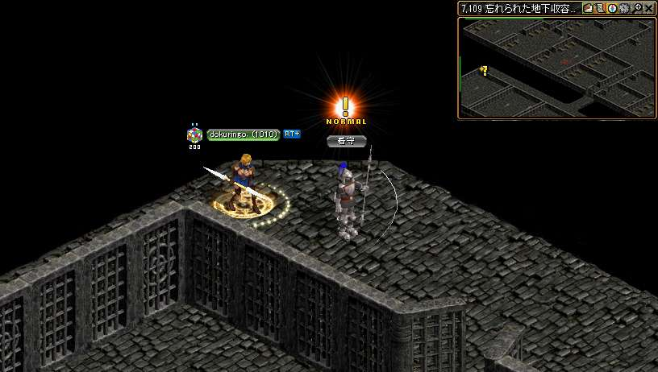 |
ガイド951~のクエスト【休まない看守】 【看守】と話してクエ受諾。 看守の前を記憶１取り直し |
|---|---|
| 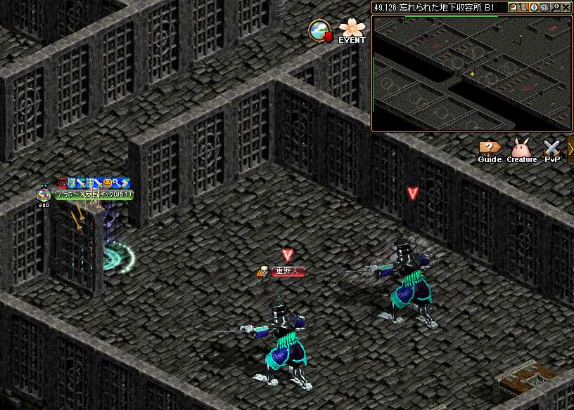 |
重罪人を30体倒す 左下エリアと右上エリアを往復するといい 記憶１で看守の前へ |
|
【看守】と話してＵＰ |
|
| 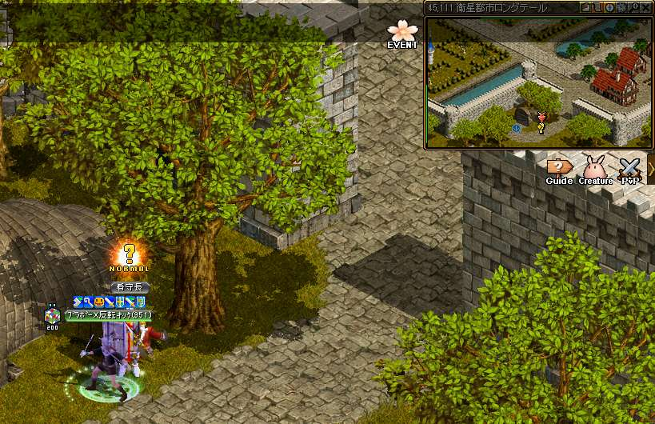 |
ガイド951~の狩り場【忘れられた地下収容所Ｂ１】へ飛ぶ。 すぐそばの移動ポータルを入って【ロングテール】へ。 【看守長】と話してクエ終了。 |